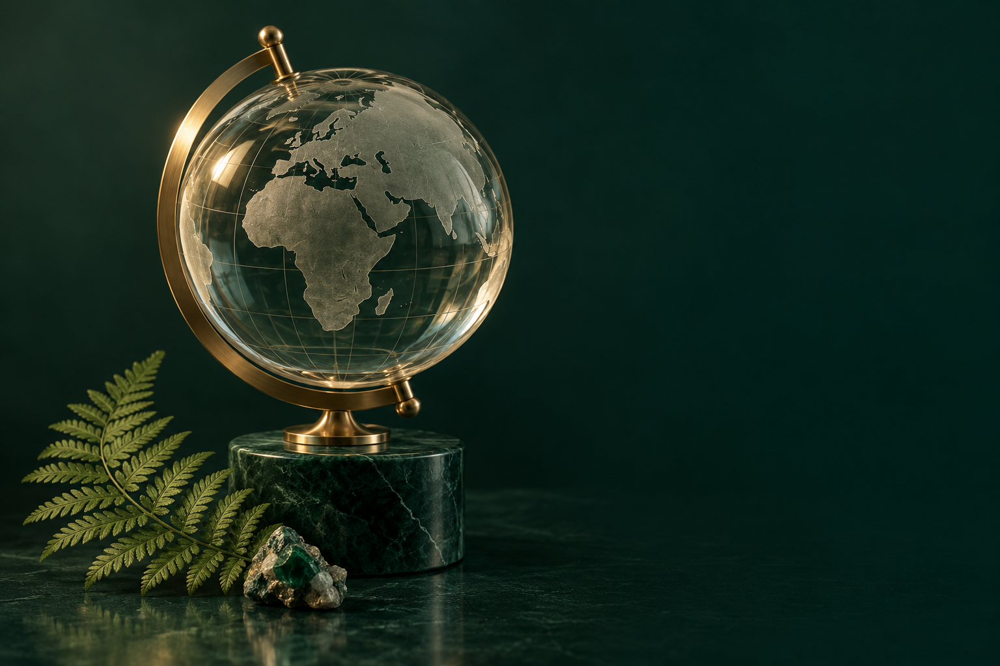

المرحلة الابتدائية · من الأول إلى السادس
العلوم،
متعة الاكتشاف.
عالمٌ من الدروس التفاعلية يقرّب العلوم إلى أذهاننا.
اختر صفّك، واكتشف المعرفة درسًا بعد درس.
مسارات التعلّم
اختر صفّك الدراسي
٦ صفوف دراسية٧١ درسًا تفاعليًا
الصف الأول
الابتدائي
النباتات من حولنا · الحيوانات ومساكنها · أرضنا
١١ درسًااستعرض الدروس
الصف الثاني
الابتدائي
النباتات والحيوانات · المواطن · أرضنا
١٢ درسًااستعرض الدروس
الصف الثالث
الابتدائي
المخلوقات الحية · النظام البيئي · الأرض ومواردها
١٢ درسًااستعرض الدروس
الصف الرابع
الابتدائي
المخلوقات الحية · الأنظمة البيئية · صحة الإنسان
١٢ درسًااستعرض الدروس
الصف الخامس
الابتدائي
تنوع الحياة · الأنظمة البيئية · الأرض ومواردها
١٢ درسًااستعرض الدروس
الصف السادس
الابتدائي
تنوع الحياة · عمليات الحياة · الأنظمة البيئية ومواردها
١٢ درسًااستعرض الدروس